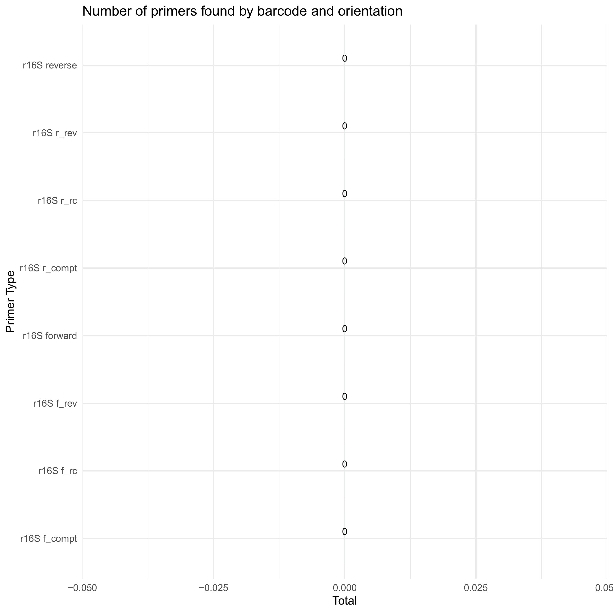
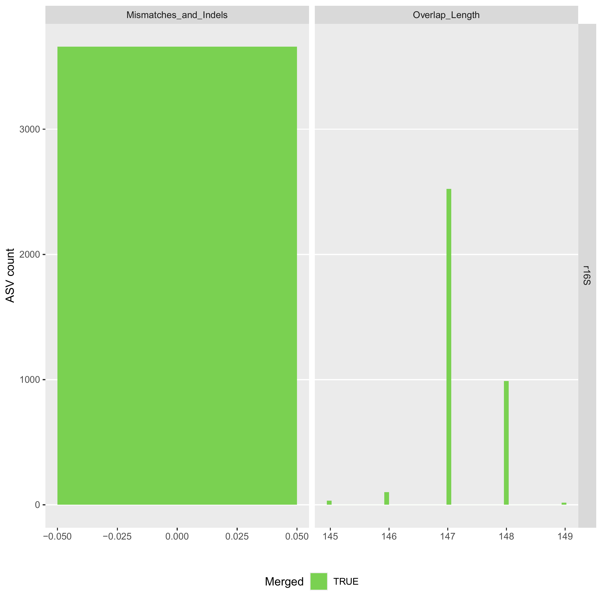
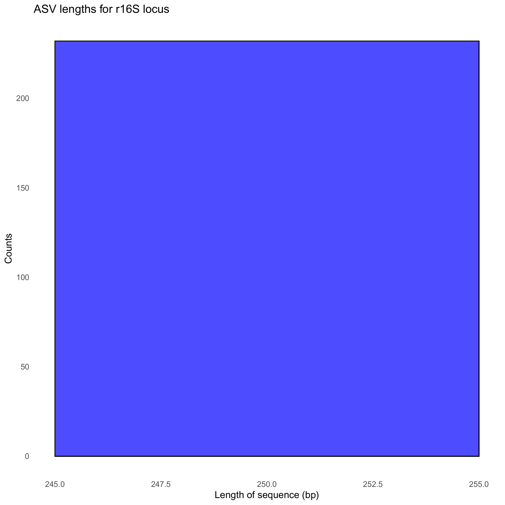
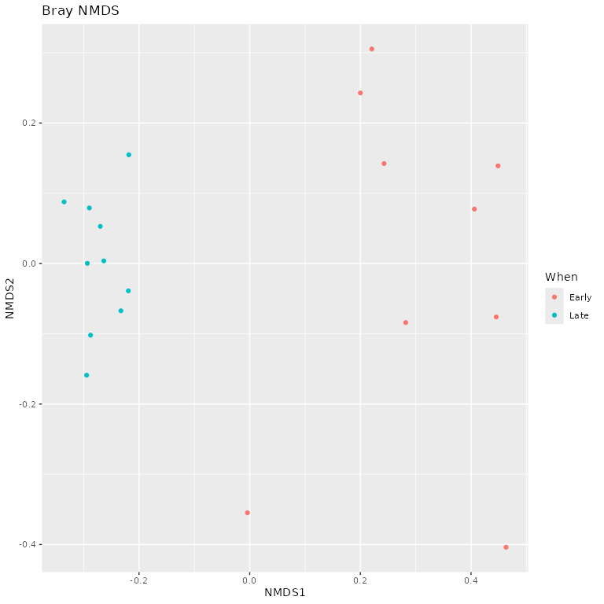
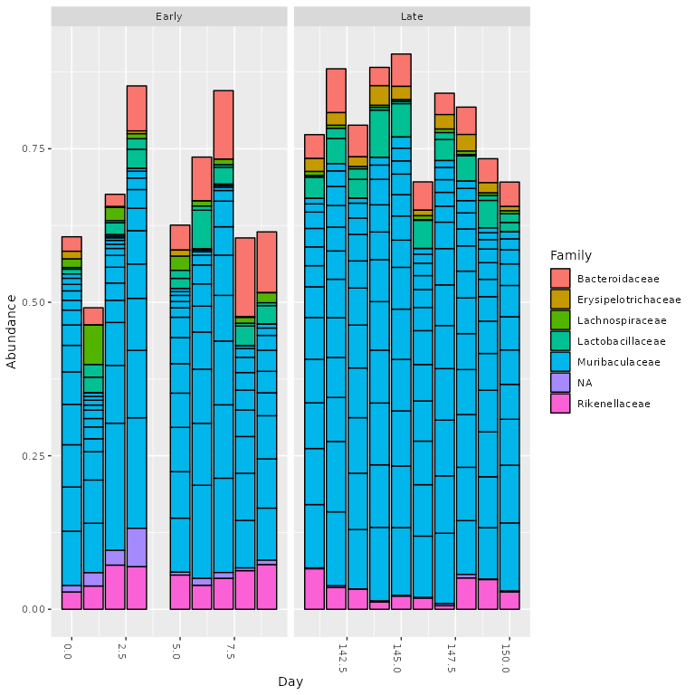

16S Mothur SOP Validation
Source:vignettes/DADA2_16S_mothur_validation.Rmd
DADA2_16S_mothur_validation.RmdThis vignette shows how demulticoder was used to analyze the mothur 16S SOP dataset featured in DADA2 tutorials
First, make sure input metadata and primerinfo_params files are in data folder
The only required columns are the first with sample names, and the second with the primer name/barcode used. The subsequent columns are user-specific columns for downstream steps metadata.csv file
| sample_name | primer_name | Day | When |
|---|---|---|---|
| F3D0 | r16S | 0 | Early |
| F3D1 | r16S | 1 | Early |
| F3D141 | r16S | 141 | Late |
| F3D142 | r16S | 142 | Late |
| F3D143 | r16S | 143 | Late |
| F3D144 | r16S | 144 | Late |
| F3D145 | r16S | 145 | Late |
| F3D146 | r16S | 146 | Late |
| F3D147 | r16S | 147 | Late |
| F3D148 | r16S | 148 | Late |
| F3D149 | r16S | 149 | Late |
| F3D150 | r16S | 150 | Late |
| F3D2 | r16S | 2 | Early |
| F3D3 | r16S | 3 | Early |
| F3D5 | r16S | 5 | Early |
| F3D6 | r16S | 6 | Early |
| F3D7 | r16S | 7 | Early |
| F3D8 | r16S | 8 | Early |
| F3D9 | r16S | 9 | Early |
| Mock | r16S | NA | NA |
I then included the necessary second file with the name of the barcode selected, primer sequences, and the optional DADA2 parameter options. I referenced the DADA2 tutorial to select the proper parameter options.
Note, primers were already trimmed from reads, but just to be certain, I included the Earth Microbiome primers described here, and a few primer sequences were still found within a small number of reads. primerinfo_params.csv| primer_name | forward | reverse | already_trimmed | minCutadaptlength | multithread | verbose | maxN | maxEE_forward | maxEE_reverse | truncLen_forward | truncLen_reverse | truncQ | minLen | maxLen | minQ | trimLeft | trimRight | rm.lowcomplex | minOverlap | maxMismatch | min_asv_length |
|---|---|---|---|---|---|---|---|---|---|---|---|---|---|---|---|---|---|---|---|---|---|
| r16S | GTGYCAGCMGCCGCGGTAA | GGACTACNVGGGTWTCTAAT | TRUE | 50 | TRUE | TRUE | 0 | 2 | 2 | 240 | 160 | 2 | 20 | Inf | 0 | 0 | 0 | 0 | 12 | 0 | 50 |
Step 1
Remove N’s and create directory structure for downstream steps
outputs<-prepare_reads(
data_directory = "~/benchmark_demulticoder/mothur_16S_sop/data",
output_directory = "~/benchmark_demulticoder/mothur_16S_sop/vignette_outputs",
tempdir_path = "~/benchmark_demulticoder/mothur_16S_sop/vignette_outputs_temp",
tempdir_id = "temp_files")
Step 2
Run Cutadapt to remove primers and then trim reads with DADA2 filterAndTrim function
cut_trim(
outputs,
cutadapt_path="/opt/homebrew/bin/cutadapt")We can now visualize the outputs from the primer removal and trimming steps. A CSV files is output showing which samples still have primer sequences and the barplot below summarizes the outputs.
There are circumstances where a few primer sequences may still remain. If so, any ASVs with any residual primer sequences will be filtered at the end.

Step 3
Core ASV inference step
make_asv_abund_matrix(
outputs)We can now visualize the outputs from the ASV inference step.
The first plot shows the how reads were merged in terms of mismatches and indels.
The plot to the right shows the overlap lengths across the inferred ASVs.

We can also look at the distribution of ASV lengths

Step 4
Assign taxonomy step
assign_tax(
outputs,
asv_abund_matrix,
db_16S="silva_nr99_v138.2_toSpecies_trainset.fa.gz",
retrieve_files=FALSE)As a check we can take a look at read counts across the workflow. If there are sudden drops, we should reconsider our adjusting certain DADA2 parameters and re-running the analysis.
#> Tables showing read counts throughout the demulticoder DADA2 workflow
#> samplename_barcode input filtered denoisedF denoisedR merged nonchim
#> 1 F3D0_r16S 7733 7112 6976 6979 6540 6528
#> 2 F3D1_r16S 5829 5299 5226 5239 5027 5016
#> 3 F3D141_r16S 5926 5463 5331 5357 4986 4863
#> 4 F3D142_r16S 3158 2914 2799 2830 2595 2521
#> 5 F3D143_r16S 3164 2941 2822 2868 2553 2519
#> 6 F3D144_r16S 4798 4312 4150 4228 3646 3507
#> 7 F3D145_r16S 7331 6741 6592 6627 6079 5820
#> 8 F3D146_r16S 4993 4560 4450 4470 3968 3879
#> 9 F3D147_r16S 16956 15636 15433 15505 14233 13006
#> 10 F3D148_r16S 12332 11412 11250 11267 10529 9935
#> 11 F3D149_r16S 13006 12017 11857 11898 11154 10653
#> 12 F3D150_r16S 5474 5032 4879 4925 4349 4240
#> 13 F3D2_r16S 19489 18075 17907 17939 17431 16835
#> 14 F3D3_r16S 6726 6250 6145 6176 5850 5486
#> 15 F3D5_r16S 4418 4052 3930 3991 3713 3713
#> 16 F3D6_r16S 7933 7369 7231 7294 6865 6678
#> 17 F3D7_r16S 5103 4765 4646 4673 4428 4217
#> 18 F3D8_r16S 5274 4871 4786 4802 4576 4547
#> 19 F3D9_r16S 7023 6504 6341 6442 6092 6015
#> 20 Mock_r16S 4748 4314 4287 4286 4269 4269Step 5
Convert asv matrix to taxmap and phyloseq objects with one function
objs<-convert_asv_matrix_to_objs(outputs)
#> Rows: 232 Columns: 23
#> ── Column specification ────────────────────────────────────────────────────────
#> Delimiter: ","
#> chr (3): asv_id, sequence, dada2_tax
#> dbl (20): F3D0_r16S, F3D1_r16S, F3D141_r16S, F3D142_r16S, F3D143_r16S, F3D14...
#>
#> ℹ Use `spec()` to retrieve the full column specification for this data.
#> ℹ Specify the column types or set `show_col_types = FALSE` to quiet this message.
#> For r16S dataset
#> Taxmap object saved in: ~/benchmark_demulticoder/mothur_16S_sop/vignette_outputs/taxmap_obj_r16S.RData
#> Phyloseq object saved in: ~/benchmark_demulticoder/mothur_16S_sop/vignette_outputs/phylo_obj_r16S.RData
#> ASVs filtered by minimum read depth: 0
#> For taxonomic assignments, if minimum bootstrap was set to: 0 assignments were set to 'Unsupported'
#> ~~~~~~~~~~~~~~~~~~~~~~~~~~~~~~~~~~~~Step 6
Evaluate accuracy using mock community, as shown in dada2 tutorial
track_reads_demulticoder<-read.csv("~/benchmark_demulticoder/mothur_16S_sop/vignette_outputs/track_reads_r16S.csv", row.names = 1)
summary(track_reads_demulticoder)
#> input filtered denoisedF denoisedR
#> Min. : 3158 Min. : 2914 Min. : 2799 Min. : 2830
#> 1st Qu.: 4944 1st Qu.: 4498 1st Qu.: 4409 1st Qu.: 4424
#> Median : 5878 Median : 5381 Median : 5278 Median : 5298
#> Mean : 7571 Mean : 6982 Mean : 6852 Mean : 6890
#> 3rd Qu.: 7783 3rd Qu.: 7176 3rd Qu.: 7040 3rd Qu.: 7058
#> Max. :19489 Max. :18075 Max. :17907 Max. :17939
#> merged nonchim
#> Min. : 2553 Min. : 2519
#> 1st Qu.: 4194 1st Qu.: 4132
#> Median : 5006 Median : 4940
#> Mean : 6444 Mean : 6212
#> 3rd Qu.: 6621 3rd Qu.: 6566
#> Max. :17431 Max. :16835
tax_matrix<-read.csv("~/benchmark_demulticoder/mothur_16S_sop/vignette_outputs/final_asv_abundance_matrix_r16S.csv")
unqs.mock <- tax_matrix[, c(2, which(colnames(tax_matrix) == "Mock_r16S"))]
unqs.mock <- unqs.mock[unqs.mock$Mock_r16S != 0,]
cat("DADA2 inferred", nrow(unqs.mock), "sample sequences present in the Mock community.\n")
#> DADA2 inferred 20 sample sequences present in the Mock community.
mock.ref <- dada2::getSequences(file.path("~/benchmark_demulticoder/mothur_16S_sop/data", "HMP_MOCK.v35.fasta"))
match.ref <- sum(sapply(unqs.mock$sequence, function(x) any(grepl(x, mock.ref))))
cat("Of those,", sum(match.ref), "were exact matches to the expected reference sequences.\n")
#> Of those, 20 were exact matches to the expected reference sequences.When looking at mock community sample, we were able to extract 20 bacterial sequences with 0% mismatch, and this matched what was described previously.
Step 7
Follow-up work using phyloseq to do side-by-side comparison with dada2 example and to examine alpha diversity results
objs$phyloseq_r16S <- phyloseq::prune_samples(phyloseq::sample_names(objs$phyloseq_r16S) != "Mock_r16S", objs$phyloseq_r16S) # Remove mock sample
phyloseq::plot_richness(objs$phyloseq_r16S, x="Day", measures=c("Shannon", "Simpson"), color="When")
Step 8
Examine ordination plots as additional point of comparison with DADA2 tutorial
# Transform data to proportions as appropriate for Bray-Curtis distances
ps.prop <- phyloseq::transform_sample_counts(objs$phyloseq_r16S, function(otu) otu/sum(otu))
ord.nmds.bray <- phyloseq::ordinate(ps.prop, method="NMDS", distance="bray")
phyloseq::plot_ordination(ps.prop, ord.nmds.bray, color="When", title="Bray NMDS")
Step 9
Let’s look at what the top 20 taxa are in the early vs. late samples time points, as shown in the dada2 tutorial
top20 <- names(sort(phyloseq::taxa_sums(objs$phyloseq_r16S), decreasing=TRUE))[1:20]
ps.top20 <- phyloseq::transform_sample_counts(objs$phyloseq_r16S, function(OTU) OTU/sum(OTU))
ps.top20 <- phyloseq::prune_taxa(top20, ps.top20)
phyloseq::plot_bar(ps.top20, x="Day", fill="Family") + ggplot2::facet_wrap(~When, scales="free_x")